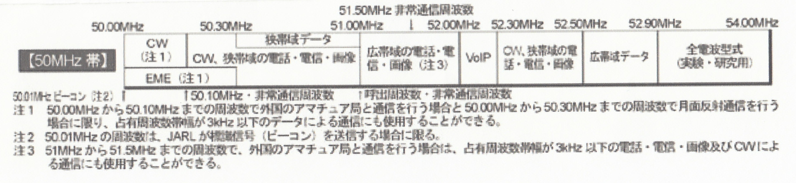
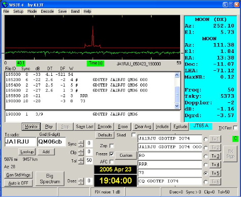
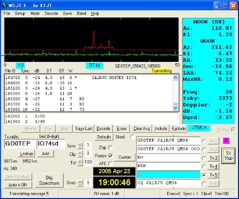
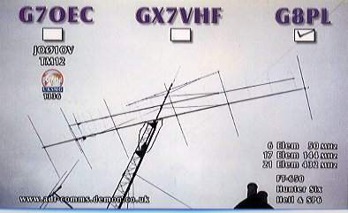
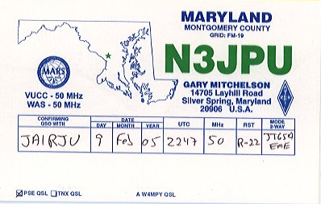

|
*** WSJT EME DX *** |
◎ 50MHz BandのEME通信が許可！
|
◎ 50MHzバンドのEME通信再開！2004年1月13日からアマチュアバンド使用区別が改正 2003年8月11日の総務省告示により、電波法施行規則等の一部改正が告示され、 2004年の1月13日の施行日から新電波形式の使用と、無線局運用規則のアマチュアバンドの使用区別も改正されました。 50MHz帯に関係するものでは、このバンドでもEME(月面反射通信)が正式に許可される事になったことです。 以前は50MHz帯でも、EMEなどの特別免許の申請も可能でしたが、昭和57年5月1日に電波法・規則改正で、 50MHz帯そのものが「宇宙無線通信業務」の指定から外されたため、"特別許可"の申請の道も完全に閉ざされていました。 2004年の改正では、久しぶりに50MHzの周波数帯でも衛星通信やEME通信を含む「宇宙無線通信の業務」の指定を受けられるようになりました。 現在は、アマチュア無線局に割り当てられている「検査なし」での最大電力は200W(移動局=50W)ですが、 この改正で、EME通信などを含む海外局との交信を目的とする申請に限り、1000Wまでの運用が可能となりました。 (但し、国内局同士の通信は最大500Wの運用に制限)。 50MHz帯のEME運用が許可された使用周波数帯は「50.000-50.100MHz」(2009年に改正)の100KHz幅ですが、 EME通信が正式免許されることになったことは喜ばしい進歩です。 最近の50MHzのEME通信は、欧米各国で盛んになっている50.150-230MHz付近を中心に運用されるJT65A/Bなどのデータ通信が主になります。 日本で許可された50.000-50.100MHzの周波数では、北米の局とはスプリットでのQSOなどで対処する必要があります。 (注：50.000-50.100MHzでのデータ通信は外国のアマチュア局との通信を行う場合に限り有効) EME通信に有効なWSJT(JT65A/Bなど)のデータ通信の利用が可能な使用周波数帯の拡張などを、 総務省に更に働きかけをおこなっていました。
◎アマチュアバンドプランが改正される ● (注：1) 50.00MHzから50.10MHzまでの周波数で外国のアマチュア局と通信を行う場合と50.00MHzから50.30MHzまでの周波数で月面反射通信を行う場合に限り、 占有周波数帯幅が3KHz以下のデータによる通信に使用することが出来る。
 2009年3月30日付けで変更された50MHz帯の新バンドプラン 改正・新バンドプラン ◎ EME通信を変えたWSJTモード 2004年1月13日に電波法施行規則等の一部が改正され50MHz帯にも「宇宙通信業務」が許可され、 EME(月面反射通信=Earth-Moon-Earth)が正式に運用出来るようになりました。 2004年のこの改正ではEMEの運用周波数帯は「50.000-50.100MHz」の100KHz幅と狭まいものだったが、 50MHzのEMEの"開放"は当時大いに期待されました。 50MHzの1000Wの運用は外国局とのQSOに限られた"限定免許"ながら、50MHzでも正式に免許が得られるようになり、 50MHzのEME-QSOも夢ではなくなったのです。 50MHzのEMEが再開された2004年の時点で、従来と大きく変わっていたのは、デジタル技術による通信モード(WSJT)の出現でした。 WSJT(Weak Signal communication, by K1JT)は2001年にK1JT(Joe Taylor氏)により発表された通信モードで、 パソコン(PC)と通信機を接続して行うこのWSJTモード(FSK441、JT44/JT6M、JT65**)はCWやSSBによる通信に比べ10数dB以上も弱い信号を解読する、 画期的な通信方法として2002年頃からEMEの通信にも盛ん使われ始めています。   WSJTのプログラム画面。50MHzのGD0TEPとの双方のQSO記録 EME通信の魅力は太陽活動が低下したサイクル最少期でも電離層の活動に関係なく海外とQSOが可能なこと。 月が"反射体"となるEMEは電離層伝搬では不可能だった144MHzや430MHzでも海外とのQSOが出来るため、 これらのV・UHF帯でDX-QSOにトライする局が急速に増えつつあります。 特に10EL〜13EL程度の4八木に500Wもあればかなりの実績を上げる事が出来る144MHz帯にQRVする局が急増しています。 2008年にはJH5FOQ・林秀則さんが、日本人初の144MHzによる世界の100エンティティーと交信に成功、2mでDXCCを獲得しました。 一方、WSJTの利用でEME-QSOが盛んになったとはいえ50MHz帯では、やはりアンテナも大型になるため、 アンテナが小型で済む144MHzや430MHzに比べるとまだまだQRVする局が少ないのが現状です。 欧米ではWSJT(FSK441/JT6M)を使いMS通信や通常のスキャッター通信も盛んですが、JAではまだ一般的ではないようです。 EMEに於ける通信ではA局とB局の双方の設備(アンテナ関係、電力)の総合された"利得"によってQSOの可否が決まります。 数値的なものを抜きで簡単に言えば、(A)局の設備が良ければ(B)局のマイナス分を補いQSOは可能となるのです。 一例として144MHzで出ているRN6BN(写真のQSL)を相手にした場合ならロングブームの14ELシングルに出力50W(FT-847)程度でもEMEのQSOは可能なのです。 RN6BNの設備は15ELX64本のクロス八木とハイパワーの"超ビッグステーション"のため相手が"50Wの弱小局"でも十分にQSOは出来ます。 今のところ50MHzでは"ビッグステーション"といわれる局でも9ELX8本程度なので、相手の局もアンテナゲインとパワーが必要になります。 やはり144MHz並みには楽なQSOは出来ません。 日本の50MHzで許可されている最大パワー1KWと14ELX2程度のアンテナでQSOが可能な相手局はロングブームの5-6ELが限界？。   WSJTでは6〜9ELのシングル八木相手でも条件が良ければ6mのEME-QSOは可能 {参考資料} ◎50MHz帯でEME通信が出来なくなった日の記録 アマチュア局が動作することをゆるされる周波数帯(施行規則第13条の2) 昭和57年4月22日郵政省告示第280号 電波法施行規則(昭和25年電波管理委員会規則第14号) 第13条の2の規則に基づき、アマチュア局が動作することを許される周波数帯を次のように定める。 指定周波数 動作することを許される周波数帯 1,910 KHz 1,907.5KHz-1,192.5KHz (注1) 3,537.5KHz 3,500 KHz-3,575KHz (注1) 3,797.5KHz 3,747KHz-3,754KHz及び3,791KHz-3,805KHz (注1) 7,050 KHz 7,000KHz-7,100KHz 10,125 KHz 10,100KHz-10,150KHz (注1.2) 14,175 KHz 14,000KHz-14,350KHz (注3) 18,118 KHz 18,068KHz-18,168KHz 21,225 KHz 21,000KHz-21,450KHz 24,940 KHz 24,890KHz-24.990KHz 28.85 MHz 28MHz-29.7MHz 52 MHz 50MHz-54MHz (注1) 145 MHz 144MHz-146MHz 435 MHz 430MHz-440MHz (注1.2) 1,280 MHz 1,260MHz-1,300MHz (注1.2) 2,425 MHz 2,400MHz-2,450MHz (注1.2.4) 5,750 MHz 5,650MHz-5,850MHz (注1.2.4) 10.125 GHz 10GHz-10.25GHz (注1.2) 10.475 GHz 10.45GHz-10.5GHz (注2) 24.025 GHz 24GHz-24.05GHz (注4) 47.1 GHz 47GHz-47.2GH 75.75 GHz 75.5GHz-76GHz 143 GHz 142GHz-144GHz 249 GHz 248GHz-250GHz 注1. この周波数は、アマチュア業務の目的と同一の目的で行わ れる宇宙無線通信の業務に使用することはできない。ただし、 次に該当する場合であって、国際電気通信条約付属通信規則 第8条の周波数分配表(以下、「国際周波数分配表」という。) に従って運用しているアマチュア業務以外の業務の無線局に 妨害を与えない場合は、この限りでない。 (1) 435MHzから438MHzまで及び2,400MHzから2,450MHzまでの 周波数を使用する場合。 (2) 1,260MHzから1,270MHzまで及び5,650MHzから5,670MHzま での周波数帯を使用して、地球からうちゅうへの伝送を 行う場合。 (3) 省略 (4) 省略 注2. この周波数帯の使用は、国際周波数分配表に従って運用して いるアマチュア業務以外の業務の無線局に妨害を与えない場 合に限る。 注3. この周波数のうち、14,250KHzを超える周波数帯は、アマチュ ア業務の目的と同一の目的で行われる宇宙無線通信の業務に 使用することはできない。 注4. 省略 附則 1. この告示は、昭和57年5月1日から施行する。 2. 昭和36年郵政省告示712号(アマチュア局が動作することを許され る周波数を定める件)は、昭和57年4月30日限り廃止する。 3. この告示の施行の際現に免許を受けているアマチュア局であって 1,257.5MHz、2,375MHz又は10.25GHzの周波数の指定を受けている ものの動作することを許される周波数帯は、当該免許の有効期間 が満了する日までは、なお従前の例とする。  EME QSO Report |